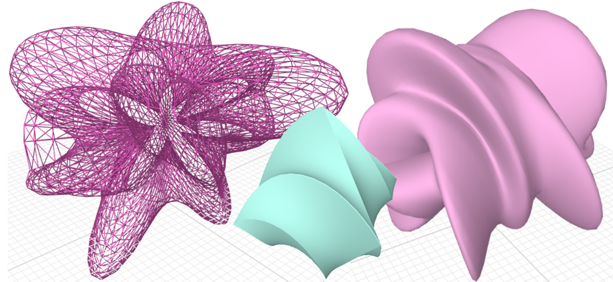
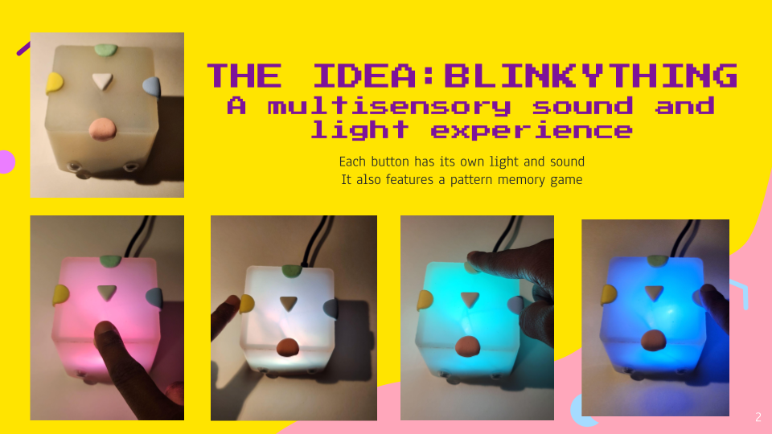

About
こんにちは！I’m Darey-Ann, a graduate student at the University of Tokyo.
I'm originally from Suriname, South-America, and came to Japan on the Japanese Government (MEXT) Scholarship in 2022.
I'm interested in art, technology, and creative coding. Check out some of my projects below.
Academics
I did my undergraduate in Mathematics at the Anton de Kom University of Suriname. As a MEXT scholar, I did my research student period at the Graduate School of IST, UTokyo. My current stats:
Master's Student at UTokyo
Graduate School: Interdisciplinary Information Studies
Department: Emerging Design and Informatics Course
Research: Shaping Trust in Smart Camera Monitoring (working title)
Projects
Friendshapes: A three.js app
 February 2025This is an application created to support my ongoing research about camera monitoring acceptance in elder care facilities in Japan
With this app, I've asked people to create a shape that feels safe and trustworthy to them. The app was created by utilizing the mathematical superquadric formula and adding additional parameters to create unique sliders.
This exploration is to discover what the trends are for people around me in choosing "friend shapes" and if this shape language can be translated into the design of monitoring cameras in order to make them more trustworthy.
Try it out here or below.
GIZMO: Blinky Thing
 February 2025For the Bootcamp at DLX Design Lab, we learned how to work with Arduino Uno. I created a toy that lights up and plays sounds when you touch it. Watch a demo here:
Reimagining New Year's Celebrations Prototype
For the Media Design Course, our group designed a light installation to help people become more aware of their surroundings. This specific design was in response to the growing phenomenon of "smartphone-walking" in Japan.
Here is a short visualization of our project.
Below is an interactive app to showcase how the installation would work. Click on a person to make them look up at the ceiling, or down at their phones. When everyone's looking down at their phones, there's no lightshow.
Champloo: A p5.js Collage App

A standalone p5.js collage application, created for the University of Tokyo's 2024 iii Exhibition.
See more details on my GitHub page.
Double-click to start!
Art
I like digital and traditional art as well. Here are some of my more recent pieces.